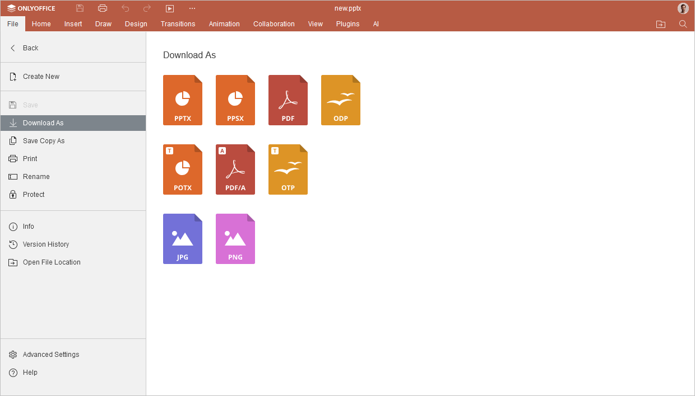
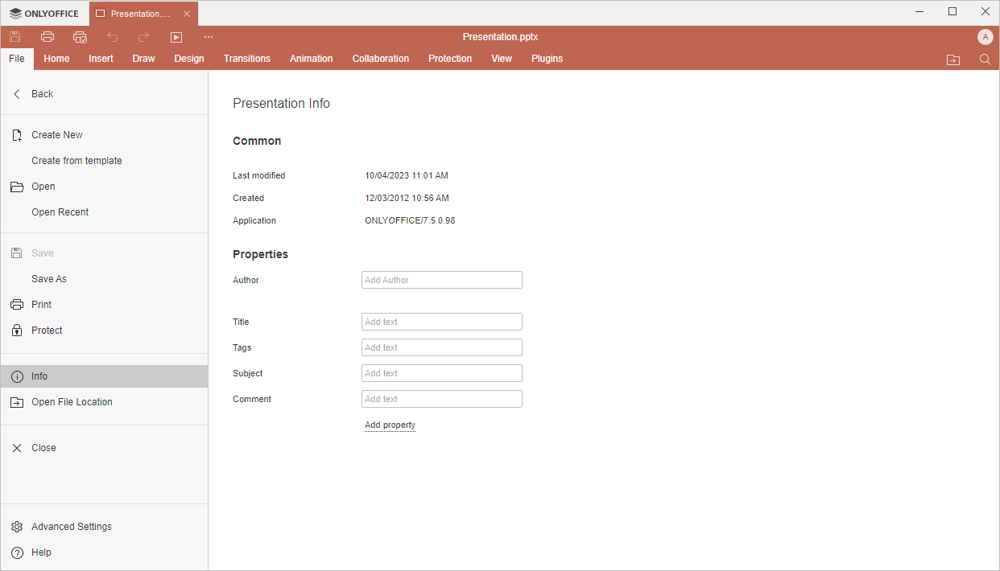

Kartica Datoteka
Kartica Datoteka u Presentation Editor-u omogućava izvršavanje osnovnih operacija sa datotekama.
Odgovarajući prozor Online Presentation Editor-a:

Odgovarajući prozor Desktop Presentation Editor-a:

Korišćenjem ove kartice možete:
- kreirati novu prezentaciju ili otvoriti nedavno uređivanu (dostupno samo u online verziji),
- u online verziji, sačuvati trenutnu datoteku (ukoliko je opcija Automatsko čuvanje isključena), preuzeti kao (sačuvati dokument u izabranom formatu na hard disk računara), sačuvati kopiju kao (sačuvati kopiju dokumenta u izabranom formatu u dokumentima portala), odštampati ili preimenovati je, u desktop verziji, sačuvati trenutnu datoteku zadržavajući trenutni format i lokaciju korišćenjem opcije Sačuvaj ili sačuvati datoteku pod drugim imenom i promeniti njenu lokaciju ili format korišćenjem opcije Sačuvaj kao, odštampati datoteku,
- zaštititi datoteku pomoću lozinke, promeniti ili ukloniti lozinku,
- zaštititi datoteku pomoću digitalnog potpisa (dostupno samo u desktop verziji),
- prikazati opšte informacije o prezentaciji ili promeniti određena svojstva datoteke,
- pratiti istoriju verzija (dostupno samo u online verziji),
- Idi u Dokumente - u desktop verziji, otvoriti fasciklu u kojoj je datoteka sačuvana u prozoru File Explorer-a, u online verziji, otvoriti fasciklu modula Dokumenti u kojoj je datoteka sačuvana, u novoj kartici pregledača,
- pristupiti Naprednim podešavanjima editora,
- Pomoć - otvoriti ugrađeni centar za pomoć.